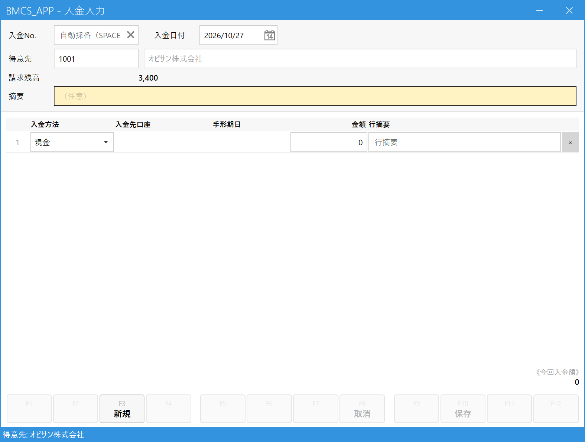
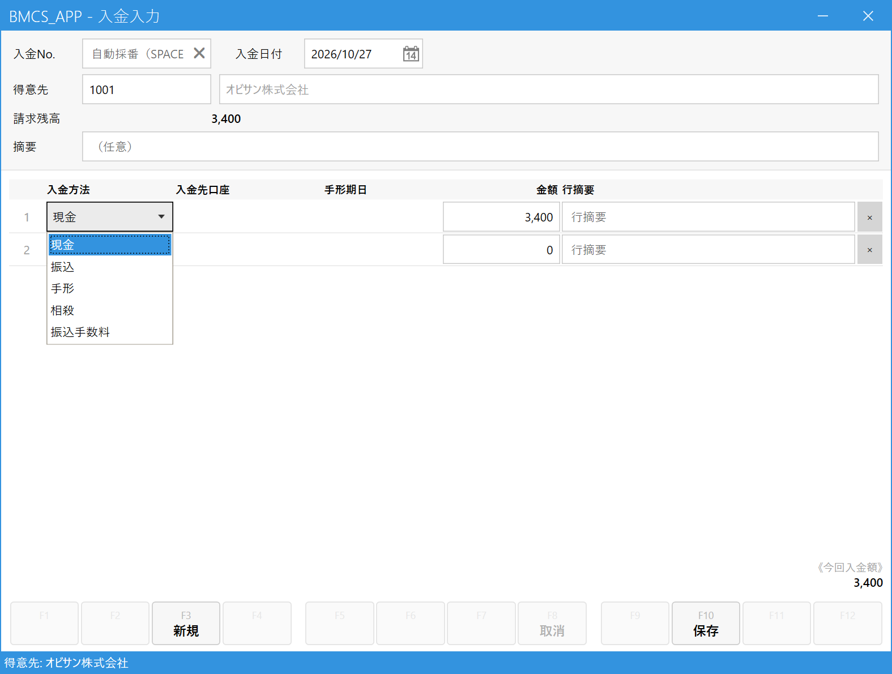
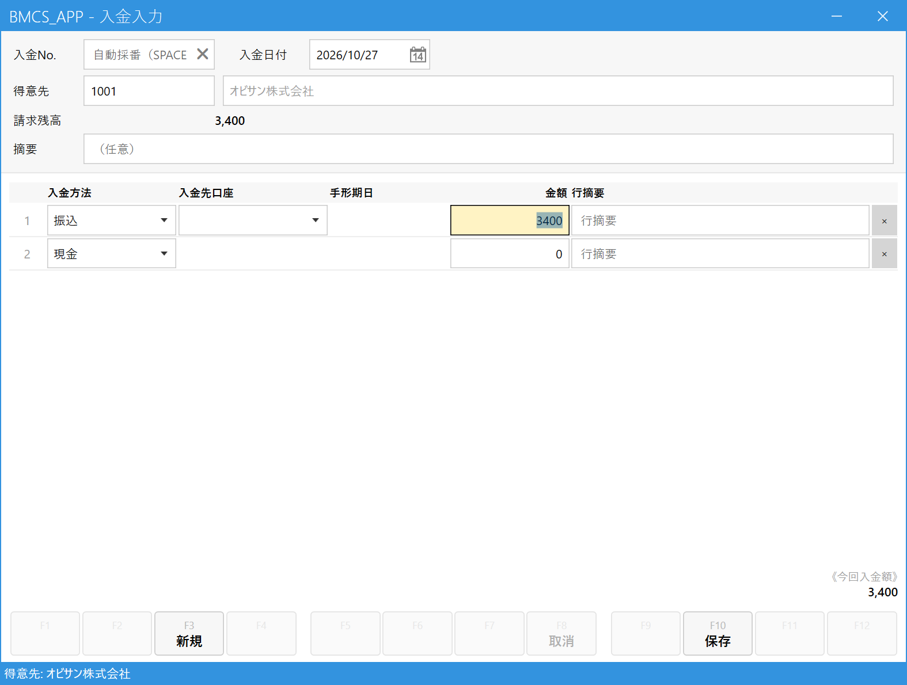

入金を登録する
こんなときに使います
お客様から代金が支払われたときに登録します（現金・振込・手形など）。
登録すると、古い請求から順に自動で支払い済みにされ、得意先の請求残高が減ります。どの請求に充てるかを自分で選ぶ必要はありません。
お客様から代金が支払われたときに登録します（現金・振込・手形など）。
登録すると、古い請求から順に自動で支払い済みにされ、得意先の請求残高が減ります。どの請求に充てるかを自分で選ぶ必要はありません。
この画面は 締め取引の得意先（20日締め・末日締めなど、月ごとにまとめて請求しているお客様）用です。官公庁・学校など都度請求の得意先は、メニューの「明細入金」を使います（得意先を入れると「明細入金画面をご利用ください」と表示されます）。
1.入金入力画面を開く
メインメニューの「入金」の中の「入金入力」をクリックします。

- 「入金入力」をクリックする
2.得意先を決めて、請求残高を確認する
得意先欄にコードを入力して Enter（わからなければ Space で検索）。得意先が決まると、その得意先の請求残高（まだ入金されていない請求の合計）が表示されます。

- 入金日付：実際にお金を受け取った日（今日が入っています）。違う日なら直します。
- 得意先：入金してくれた得意先。
- 請求残高：この得意先がまだ支払っていない金額。入金額の目安にします。
請求の集約先が別にある得意先（本社がまとめて払う支店など）は、「入金は請求集約先で登録してください」と表示されます。表示された集約先の得意先コードで入力し直します。
3.入金方法と金額を入れる
明細の1行目に、どうやって（入金方法）いくら（金額）受け取ったかを入れます。

- 入金方法：現金・振込・手形・相殺などから選びます。
- 金額：受け取った金額。
- 行摘要：その行のメモ（任意）。
- 今回入金額：全行の合計。受け取った総額と合っているか確認します。
- 保存 (F10)：金額を入れると押せるようになります（4章）。
入金方法を選ぶ

- 入金方法をクリックすると選択肢が開きます。
「振込」を選んだとき：入金先口座
入金方法を振込にすると、入金先口座の欄が出ます。どの口座に入金されたかを選びます。

- 入金方法を「振込」に変えると…
- 入金先口座を選ぶ欄が現れます。
「手形」を選んだときは、同様に手形期日の入力欄が出ます。
支払いが複数の方法に分かれるとき
たとえば「現金 10,000円＋振込 20,000円」のように1回の入金が複数の方法に分かれるときは、2行目以降に1行ずつ入力します。行は自動で増えます。合計が「今回入金額」になります。
4.保存する
保存 (F10) を押します。成功すると画面下に「入金No. ○○ を登録しました。」と表示されます。請求残高から、入金した分が差し引かれます。
5.よくある操作
| やりたいこと | 操作 |
|---|---|
| 登録済みの入金を見る・直す | 入金No.欄に番号を入れて Enter、または Space で一覧から選ぶ。直して保存。 |
| 入金を取り消す | 入金を呼び出して、ツールバーの「取消 (F8)」。 |
| 入金額を入れ直したい | 「新規 (F3)」で空に戻す。 |
| 振込手数料を引かれて入金された | 入金方法の選択肢に「振込手数料」がありますが、手数料差額の扱いは運用が未確定です。確定後に追記します。 |